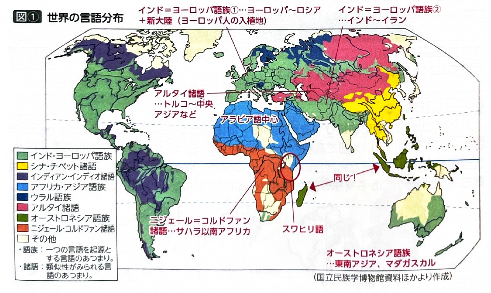
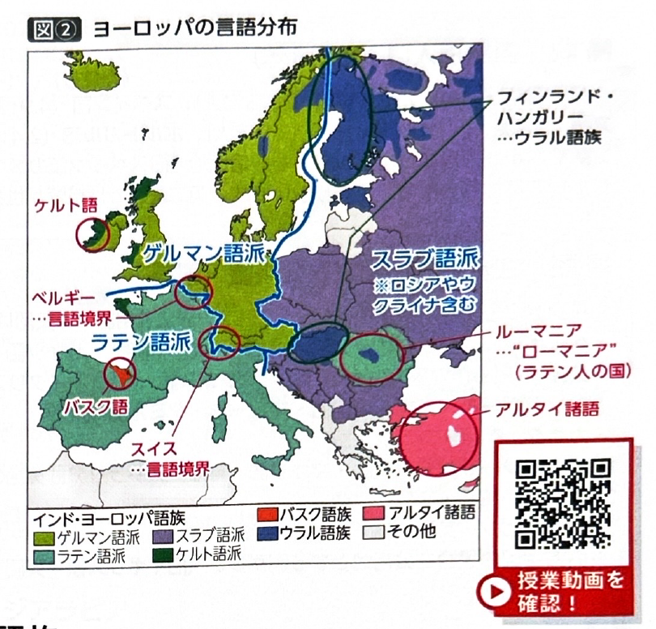
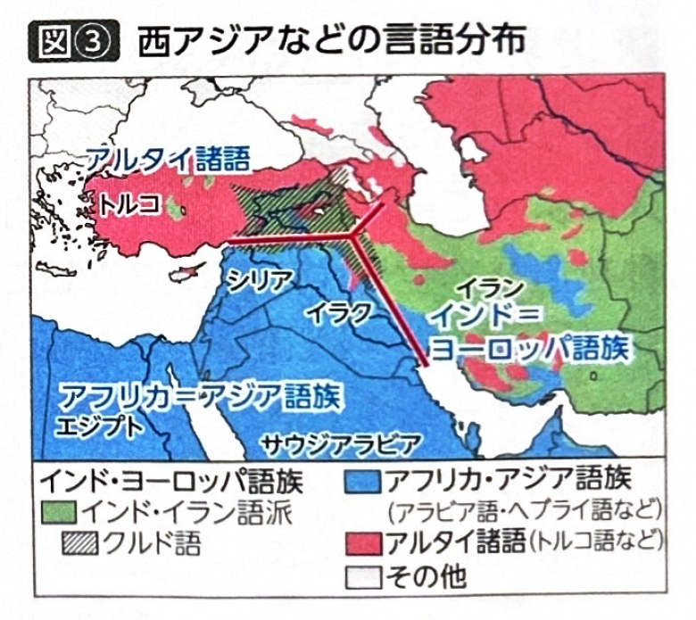
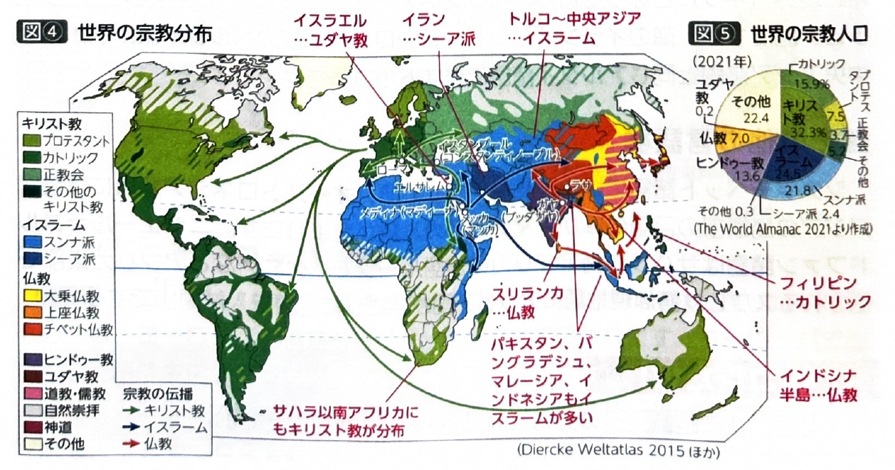
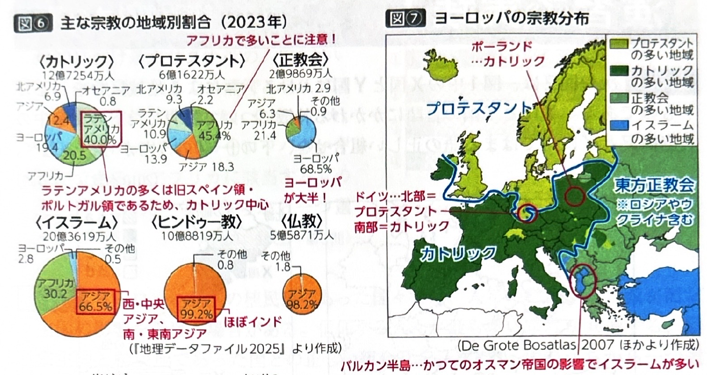
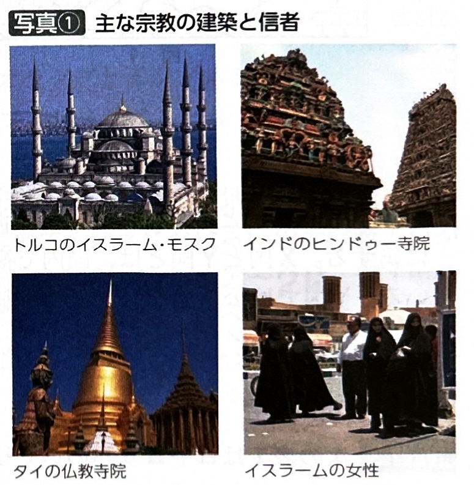

第10章 言語・宗教、紛争 - 言語・宗教
ポイント総復習
1. 主な言語群（語族と諸語）の分布
世界の言語はルーツをたどるといくつかのグループ（語族・諸語）に分けられます。
- インド=ヨーロッパ語族：ヨーロッパからロシア、インド、イランに分布。また、ヨーロッパ人の入植により南北アメリカ大陸やオセアニアにも広がっています。
- アフリカ=アジア語族：北アフリカから西アジアに広がるアラビア語などが代表です。※西アジアでの境界に注意（イラク＝アラビア語、イラン＝ペルシャ語、トルコ＝トルコ語）。
- シナ=チベット諸語：中国語やチベット語。
- オーストロネシア語族：東南アジアの島嶼部（インドネシア等）から、海を隔てたマダガスカルまで広く分布します。
- ニジェール=コルドファン諸語：サハラ以南のアフリカ。東アフリカで話されるスワヒリ語は、現地語にアラビア語が混ざった言語で入試頻出です。

2. ヨーロッパの言語分布
ヨーロッパにおけるインド=ヨーロッパ語族の３つの語派の分布と、その例外は必ず覚えましょう。
| 語派・語族 | 分布地域と主な国 |
|---|---|
| ラテン語派 | ヨーロッパ南西部。 イタリア、フランス、スペイン、ポルトガルなど。 （例外）東部のルーマニアはラテン語派。 |
| ゲルマン語派 | ヨーロッパ北西部。 イギリス、ドイツ、オランダ、北欧諸国など。 |
| スラブ語派 | ヨーロッパ東部。 ロシア、ウクライナ、ポーランドなど。 |
| ウラル語族 （例外） |
インド=ヨーロッパ語族ではない。 フィンランド、ハンガリー、エストニアなど。 |
| バスク語 （例外） |
スペイン北部（ピレネー山脈周辺）。系統不明の独立した言語。 |


3. 世界の主な宗教
宗教ごとの分布と特徴、歴史的背景を整理しましょう。
- キリスト教：信者数世界最多（約25億人）。西アジアで創始されヨーロッパへ。その後、植民地化に伴い南北アメリカやオセアニアに伝播。
- ヨーロッパの分布：おおむね北部がプロテスタント、南部がカトリック、東部が正教会（東方正教会）。
- ラテンアメリカ：旧スペイン・ポルトガル領が多いため、カトリックの割合が非常に高い。
- イスラーム：信者数世界第2位（約20億人）。アラビア半島で創始。
- 分布：北アフリカ〜西アジアだけでなく、アジア（南・東南アジアなど）の信者数が全体の約6割を占める。
- 特徴：政教一致の国もある。豚肉・飲酒の禁止、モスクでの礼拝。
- 仏教：信者数約5億人。インドで創始。現在は東・東南アジア（インドシナ半島）、スリランカなどに分布。
- ヒンドゥー教：信者数10億人超。インド国民の約8割が信仰。カースト制度、牛を神聖視（牛肉食禁止）。



【補説】言語に関する重要事項
- 第一言語（母語）の人口：1位 中国語、2位 スペイン語、3位 英語、4位 アラビア語。※スペイン語やポルトガル語は、ラテンアメリカの旧植民地で話されるため言語人口が多いです。
- 多言語国家の例：
- スイス：ドイツ語（約6割）、フランス語、イタリア語、ロマンシュ語。
- カナダ：英語、フランス語（ケベック州）。
- シンガポール：英語、中国語、マレー語、タミル語。
- インド：ヒンディー語など22の公用語。英語は準公用語。
基礎問題（理解度チェック）
Q1. ヨーロッパの言語分布について、空欄を埋めなさい。
ヨーロッパで話される言語の多くはインド=ヨーロッパ語族に属し、大きく3つに分けられる。イタリアやフランスなどの南西部は
、イギリスやドイツなどの北西部は
、ロシアやポーランドなどの東部は
である。ただし、東部のルーマニアは例外的にラテン語派である。
Q2. その他の言語分布について、空欄を埋めなさい。
北アフリカから西アジアにかけては、アラビア語などの
が広く分布する。また、サハラ以南アフリカの東部（ケニアなど）で話される
は、アフリカの現地語にアラビア語が混ざって成立した言語である。
Q3. ヨーロッパの宗教分布について、空欄を埋めなさい。
ヨーロッパにおけるキリスト教の分布をみると、おおむねイギリスや北欧諸国などの北部は
、イタリアやスペインなどの南部は
、ロシアなどの東部は
が多く信仰されている。
Q4. ブラジルやメキシコなどのラテンアメリカ諸国は、かつてイギリスやフランスの植民地であった国が多いため、キリスト教の中でもプロテスタントを信仰する人の割合が非常に高い。
Q5. イスラームの信者数はキリスト教に次いで世界で2番目に多く、現在ではアラブ人が多く住む中東や北アフリカの信者数が、アジア（南・東南アジア等）の信者数を大きく上回っている。